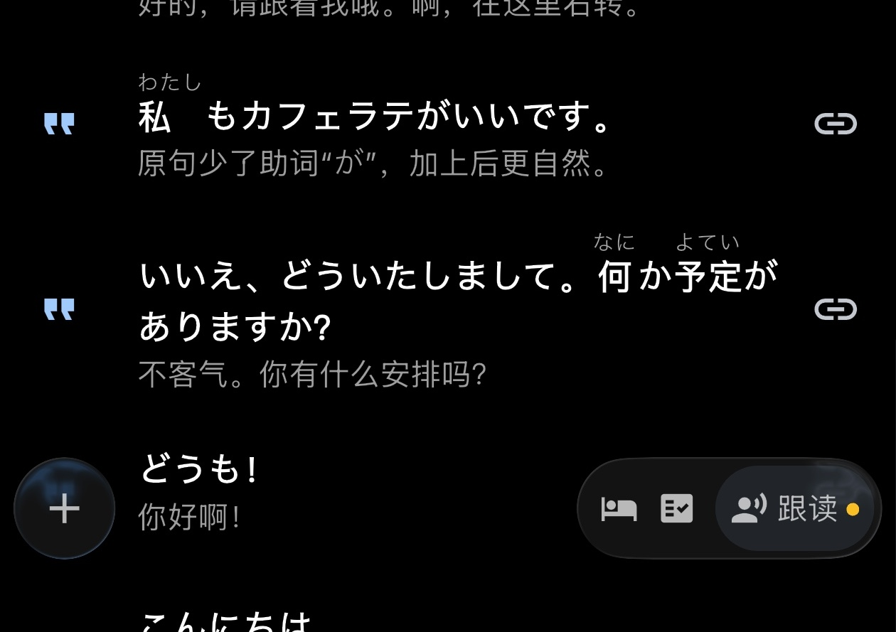

OCAT 是什么？快问快答帮你搞懂这款 AI 口语采句工具
OCAT 是一款把 AI 对话生成的外语句子变成可收藏、可朗读、可跟读的个人句库工具。本文用一问一答的形式覆盖它的定位、核心玩法、日语专项、影子跟读、图片对话等常见疑问。
整理一篇关于 OCAT 的快问快答，都是外语学习者真会关心的问题——直接上干货。
OCAT 到底是什么？一句话能说清吗？
OCAT 是一款句子本位的 AI 口语学习工具，在它的官网上有完整的功能列表。它的核心思路很简单：跟 AI 聊外语，把生成的每句都收进个人句库，之后能反复朗读、切换声音、练跟读。区别于传统 AI 对话工具的地方在于，它不是聊完就丢，而是把每一次对话的产出沉淀成可长期打磨的学习素材。
谁适合用 OCAT？
三类人会特别受益。第一类是日语学习者——OCAT 在日语语体（礼貌体 vs 普通体）控制上做得很细，能让 AI 按对长辈、对朋友、对客户三种不同语气说话。第二类是有「开口恐惧」的外语学习者：传统工具要么只给翻译，要么聊完没复习闭环，OCAT 把每次 AI 产出的句子都接住了。第三类是想积累地道表达的人：一句句话收下来，标签分好类，考前或旅行前翻一翻就是自己的表达库。
怎么下载安装？支持哪些设备？
目前 OCAT 支持 Android 7.0 及以上的手机和平板，也有 iOS 版本。桌面端暂时没有 Windows 或 macOS 客户端。安装包可以从官方下载获取，各大应用商店也有上架。云同步是可选功能——不想同步只用本地存储也能完整使用，数据加密传输。
它的核心玩法到底是什么？
四个字：AI 对话采句。打开应用后选一个主题或场景（比如「在居酒屋点单」「和同事请假」），跟 AI 对话。AI 说的每句外语你都可以一键收藏，收进对应的收藏夹。之后在句库里点一句，就能用不同声音、不同语速、带不带翻译地反复朗读。更进阶的玩法包括影子跟读（录音对比自己和原声的差异）和图片对话（上传照片让 AI 围绕场景生成表达）。
影子跟读怎么玩？流量消耗大吗？
影子跟读的核心是「听一句、跟一句、录一句、比一句」。录音和回听的数据主要在本地处理，不需要持续联网，所以流量消耗很低——只有首次同步和 AI 采句的时候才需要联网。较新版本还加了「第二遍降低音量」选项，让你在第二遍时更注意自己的跟读尝试，而不是一直被原声「压着」。

日语礼貌体和普通体怎么区分？OCAT 能帮上忙吗？
这是日语学习者最容易踩的坑：对长辈用了普通体显得没礼貌，对朋友用了礼貌体又显得生分。OCAT 在主题对话设置里可以直接指定语气——选「礼貌体」AI 就全程用ます形和です说话，选「普通体」就用更随意的口语，甚至有「像朋友一样」模式会自动加よ、ね、だな这类语气词。对话过程中还能自由追问：「对朋友说会不会太正式？」「换成敬语版本」，AI 会立刻切换。
图片对话是什么场景用的？
图片对话把「看图说话」变成了采句入口，OCAT文档里对这个功能的玩法有更详细的说明。比如旅行前拍一张金阁寺的照片，让 AI 用日语生成描述这个地方的句子、可能会听到的地道表达、相关的文化知识句子。然后把这些句子收藏，到了现场就能用上。日常也能用：拍一张咖啡照片让 AI 生成点咖啡的表达，拍一张地铁车厢照片让 AI 生成乘车相关的句子。上传时还能补充方向，比如「帮我生成和这个场景相关的 5 句日语，要礼貌体」。
OCAT 和 ChatGPT 这类通用 AI 有什么区别？
通用 AI 可以生成外语表达，但没有后续的学习闭环——你无法收藏、无法播放、无法测试、无法跟读。聊完就丢，下次遇到类似场景还是不会说。OCAT 的核心价值就是把 AI 生成的句子变成可长期收藏、反复磨练的个人句库，形成「采集 → 收藏 → 朗读 → 跟读 → 复习」的完整学习链条。
免费吗？和同类比贵不贵？
OCAT 采用免费下载 + 应用内付费的模式。基础功能（AI 对话采句、收藏、播放）都免费可用，一些高级功能可能需要订阅。应用内付费的月度费用大约是同类产品的 20% 左右，以应用内实际价格为准。
发音不准能手动改吗？
不能直接手动修改每句的发音，但可以通过句子详情的「更多」菜单反馈发音问题并刷新朗读，或者请求重新翻译。OCAT 会根据反馈重新生成更准确的内容。同一句话还能切换不同的声音风格、语速、停顿节奏，多听几遍不同引擎的发音，能帮助你建立正确的音感。
OCAT 和 OpenCat 是同一个东西吗？
不是。两个名字很像但完全不同。OCAT（ocatapp）是句子本位的口语学习工具，图标是猫形配色。OpenCat 是另一个开源项目，和语言学习无关。认准名称和核心功能（AI 对话采句 + 收藏 + 播放 + 跟读）就不会混淆。
最后一句：如果你有一外语种想系统练口语，又怕聊完就丢，OCAT 值得装来试试——用 AI 采句，用朗读和跟读反复磨，慢慢就攒出自己的表达库了。这篇文章整理的资料同步到了三个平台——GitHub 托管主版、Gitee 做国内镜像、GitCode 是第三份备份，方便不同网络环境的读者查阅。